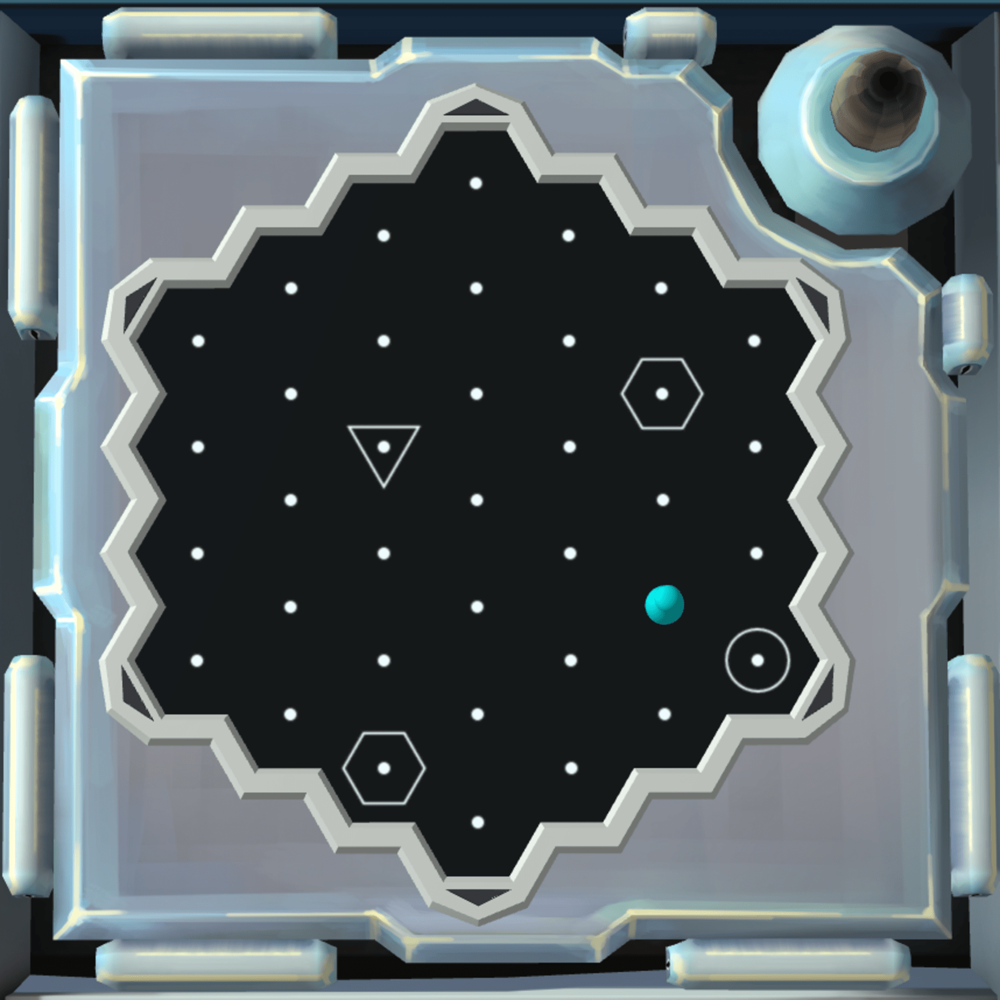
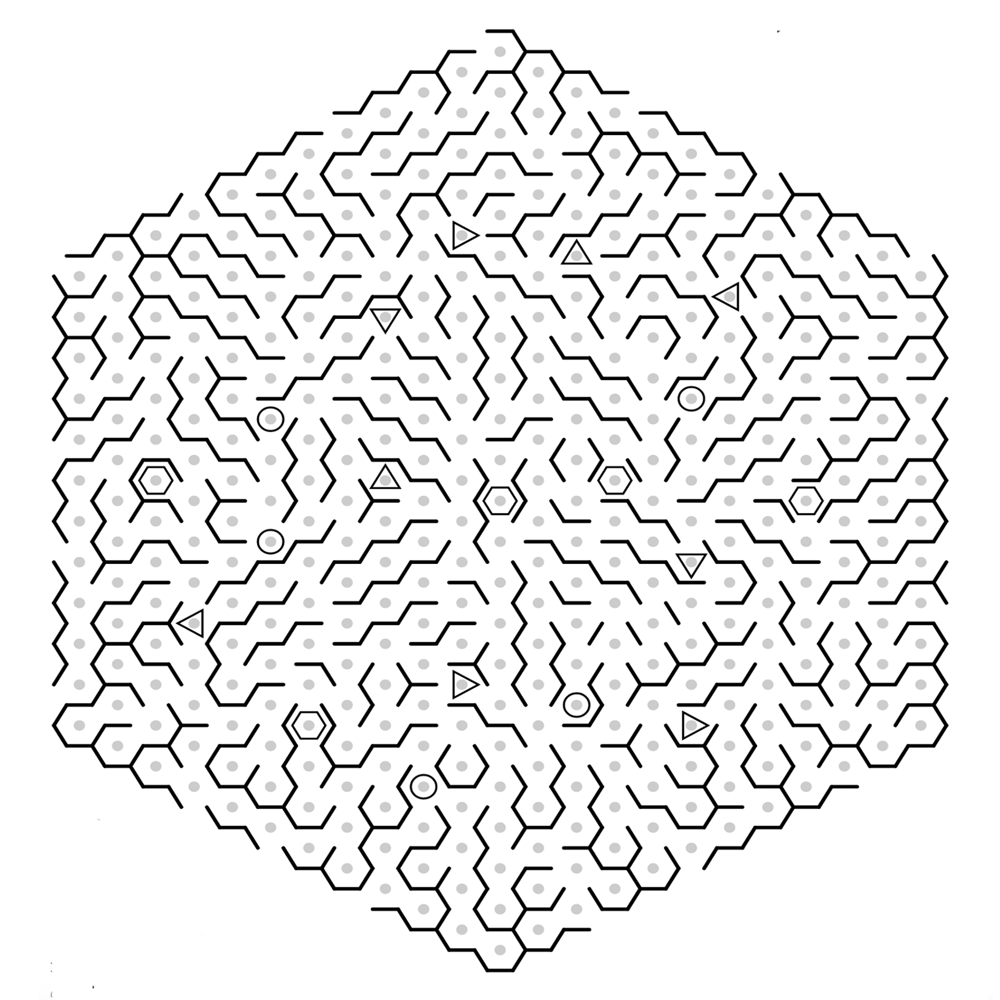
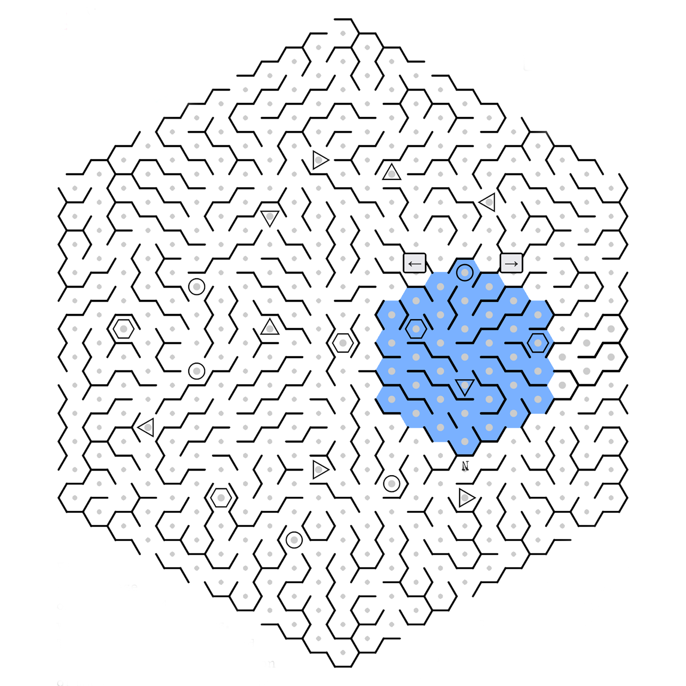
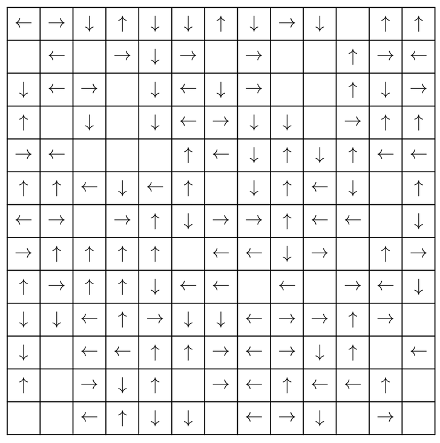

The Game Keep Talking and Nobody Explodes (KTANE) involves cooperatively solving a series of puzzles
in order to defuse a bomb.
In the game, the player with the bomb needs to relay information presented to them in the module to the other player
who has the manual on how to
defuse the bomb. Notably, the defuser cannot see the manual, and the player with the manual cannot see the bomb.
In hexamaze, the defuser is presented with a small hexagonal grid with a few icons on it and a colored peg. The
defuser then must convey the relative
positions of the symbols on the hexagonal grid to the player with the manual. In the manual, there is a larger
hexagonal grid, which contains the small
one that the player sees, up to rotation. It is then the goal of the manual player to align the small subgrid that
the defuser has to the large grid in the manual
and instruct the defuser how to guide the peg out of the maze.
In the example below, the highlighted blue section on the rightmost image is the subgrid that the defuser sees,
correctly overlayed on the grid
that the manual user sees, as conveyed by the circle, hexagon, and triangle indicators which need to line up.



What the defuser sees
What the manual user sees
The subgrid properly alligned to the large grid
Making it Mathy
Finding the correct orientation of the maze wasn't so hard, right? From this game arises a natural question, or at
least it did to my friends and I:
"what is the hardest you can make a hexamaze?". In order to keep things interesting, tractible, and explainable
without going too much more into the details of KTANE,
we will make some simplifying assumptions:
The board will be a square
The symbols will be arrows facing up, down, left, or right, or are blank.
The "defuser" will see a 2 \times 2 subgrid of the board.
To formally state the problem: You are tasked with filling in a n \times n board
with symbols, \{\uparrow, \downarrow, \rightarrow, \leftarrow, \quad\}, in each
cell such that every 2 \times 2 subgrid
is unique up to rotation. What is the largest value of n for which this is
possible? For simplicity a "tile" will refer to a
2 \times 2 subgrid, and a "cell" will refer to a single square in the grid.
A Quick Upperbound
For the sake of example, we can demonstrate the following upperbound. The board cannot be larger than 26 \times 26.
To see why, consider that there are 5 (up, down, left, right, blank) symbols that
can be placed on the board, and
4 squares
that the user sees. Thus, if we ignore rotation, there are 5^4 unique 2 \times 2 patterns.
On a 26 \times 26 board, there are 25 \times 25 =
5^4, 2 \times 2 subgrids,
and thus, if the board were any larger we would run out of unique 2 \times 2 tiles
to place on the board.
Doing a Bit Better
From here, Burnside's lemma was discussed as potentially
being useful. Burnside's lemma describes the number of orbits when a group G acts
on a set X\vert X / G \vert = \frac{1}{\vert G\vert} \sum_{g \in G} \vert \{x \in X \mid g \cdot x
= x\} \vert
To utilize this, we let X be the set of configurations of a 2 \times 2 tile, and
G = \{e, \circlearrowright, \circlearrowright^2, \circlearrowright^3\} be the
cyclic group of order 4 where
the action in question is rotation clockwise by 90^\circ .
For example (with colors added to make the rotation more apparent) we have:
\circlearrowright^3 \cdot \begin{bmatrix} \blue{\uparrow} & \green{\downarrow} \\ \red{\rightarrow} &
\purple{\leftarrow}\end{bmatrix} =
\begin{bmatrix} \green{\rightarrow} & \purple{\downarrow} \\ \blue{\leftarrow} & \red{\uparrow} \end{bmatrix}
Applying the theorem, we count the fixed points under each rotation:
Under no rotation, everything is fixed, so this adds 5^4 to our sum
Under clockwise rotation by 90^\circ, the only fixed points are the square
of
all blanks and the rotations of the square \begin{bmatrix} \uparrow & \rightarrow
\\ \leftarrow & \downarrow \end{bmatrix}
which all together will add 1 + 4 = 5 to the sum.
Under a 180^\circ rotation, we see that we can fix two tiles, and then the
other two will automatically be fixed.
This results in an additional 5^2 = 25 to the sum.
For 270^\circ, the same reasoning as 90^\circ applies leaving us with another 5.
This means, all together, there are \frac{1}{4}\left(5^4 + 5 + 5^2 + 5\right) = 165
orbits, or,
165 tiles up to rotation!
This means that we cannot have a 14 \times 14 board or larger, as this will have
169,
2 \times 2 tiles which will require us to use a duplicate. This is a massive
improvement on our 26 \times 26
bound from before!
Constructing the Best Board
I must confess, the story I've told so far all took place before I was brought onto the problem. This all happened
over the course of a math club
dinner which I didn't attend. However, during that dinner, despite quickly finding the upperbound via the methods I
described above, they unsurprisingly found
constructing boards with no duplicate tiles turns out to be very difficult by hand. As such, whether 14 was a tight bound remained a mystery, was it even possible to build a
13 \times 13 board under the constraints?
Hearing about the discussion of this problem in a Discord call later that night, I thought I could help with my
favorite tool: SAT Solvers.
This blog assumes knowledge of what SAT and SAT solvers are. A quick summary can be found on Wikipedia.
While this problem seems quite complicated to encode, it is actually not too difficult. After a bit of thinking, I
encoded the problem with the following procedure:
Each square has 5 variables, one for each symbol
Every 2 \times 2 combination tile of variables implies exactly one of 165 "equivalence class" variables associted with the tile
There must be at most one of each class of equivalence class variables set accross all of the tiles.
I should add, by this point it was around 4am and I had just come home from a night in New York City, so I was
exhausted. I wasn't really considering how to optimally encode
the problem - I just wanted to see what would happen if I tried a naive strategy - I could improve it tomorrow
morning. With my encoding scheme, for a 13 \times
13 board, this encoding results in (13^2 * 5) + (12^2 * 165) = 24605
problem variables.
At first, when I saw this I was a bit disheartened - I was too tired to implement any clever encoding of the
cardinality constraints, and knowing the naive encoding I cooked up
would be roughly O(n^2) clauses, I felt I should probably go to bed and come back
to the problem in the morning. But, something in me pushed me to try it
anyway. And to my surprise, despite the tragically large number of clauses, 1795739
to be exact, cadical spit out an answer almost immediately!
It turned out a 13 \times 13 board was possible! I quickly wrote a script to decode
the output from cadical, and my sleep deprived brain couldn't believe its eyes.
I proudly present: the hardest possible square hexamaze!

Challenge
Don't believe me that it's hard? Try to find this in the grid (remember, up to rotation!)